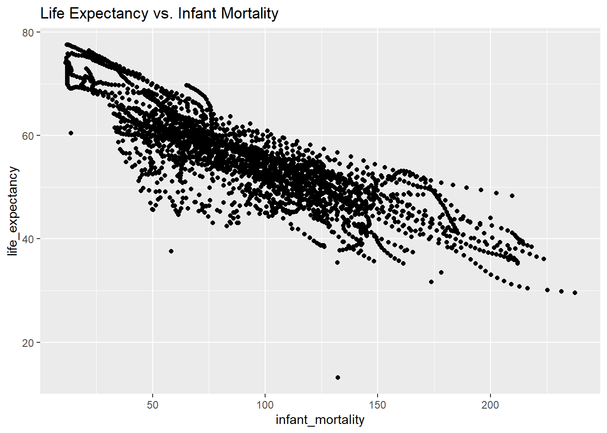
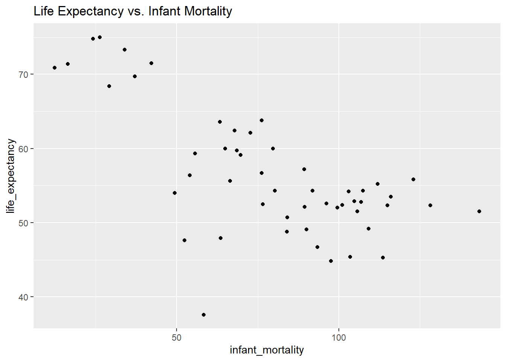

Load the dslabs package. Install if you haven’t. Then, inspect the gapminder dataset.
#load dslabs package and tidyverselibrary(dslabs)library(tidyverse)#look at help file for gapminder datahelp(gapminder)#get an overview of data structurestr(gapminder)
'data.frame': 10545 obs. of 9 variables:
$ country : Factor w/ 185 levels "Albania","Algeria",..: 1 2 3 4 5 6 7 8 9 10 ...
$ year : int 1960 1960 1960 1960 1960 1960 1960 1960 1960 1960 ...
$ infant_mortality: num 115.4 148.2 208 NA 59.9 ...
$ life_expectancy : num 62.9 47.5 36 63 65.4 ...
$ fertility : num 6.19 7.65 7.32 4.43 3.11 4.55 4.82 3.45 2.7 5.57 ...
$ population : num 1636054 11124892 5270844 54681 20619075 ...
$ gdp : num NA 1.38e+10 NA NA 1.08e+11 ...
$ continent : Factor w/ 5 levels "Africa","Americas",..: 4 1 1 2 2 3 2 5 4 3 ...
$ region : Factor w/ 22 levels "Australia and New Zealand",..: 19 11 10 2 15 21 2 1 22 21 ...
#get a summary of data summary(gapminder)
country year infant_mortality life_expectancy
Albania : 57 Min. :1960 Min. : 1.50 Min. :13.20
Algeria : 57 1st Qu.:1974 1st Qu.: 16.00 1st Qu.:57.50
Angola : 57 Median :1988 Median : 41.50 Median :67.54
Antigua and Barbuda: 57 Mean :1988 Mean : 55.31 Mean :64.81
Argentina : 57 3rd Qu.:2002 3rd Qu.: 85.10 3rd Qu.:73.00
Armenia : 57 Max. :2016 Max. :276.90 Max. :83.90
(Other) :10203 NA's :1453
fertility population gdp continent
Min. :0.840 Min. :3.124e+04 Min. :4.040e+07 Africa :2907
1st Qu.:2.200 1st Qu.:1.333e+06 1st Qu.:1.846e+09 Americas:2052
Median :3.750 Median :5.009e+06 Median :7.794e+09 Asia :2679
Mean :4.084 Mean :2.701e+07 Mean :1.480e+11 Europe :2223
3rd Qu.:6.000 3rd Qu.:1.523e+07 3rd Qu.:5.540e+10 Oceania : 684
Max. :9.220 Max. :1.376e+09 Max. :1.174e+13
NA's :187 NA's :185 NA's :2972
region
Western Asia :1026
Eastern Africa : 912
Western Africa : 912
Caribbean : 741
South America : 684
Southern Europe: 684
(Other) :5586
#determine the type of object gapminder isclass(gapminder)
[1] "data.frame"
Create a new object that contains only the African countries. Then, check the structure and summary of the new object.
#create the object with only African countriesafrican_countries <- gapminder[gapminder$continent =="Africa", ]#check the structure and summarystr(african_countries)
'data.frame': 2907 obs. of 9 variables:
$ country : Factor w/ 185 levels "Albania","Algeria",..: 2 3 18 22 26 27 29 31 32 33 ...
$ year : int 1960 1960 1960 1960 1960 1960 1960 1960 1960 1960 ...
$ infant_mortality: num 148 208 187 116 161 ...
$ life_expectancy : num 47.5 36 38.3 50.3 35.2 ...
$ fertility : num 7.65 7.32 6.28 6.62 6.29 6.95 5.65 6.89 5.84 6.25 ...
$ population : num 11124892 5270844 2431620 524029 4829291 ...
$ gdp : num 1.38e+10 NA 6.22e+08 1.24e+08 5.97e+08 ...
$ continent : Factor w/ 5 levels "Africa","Americas",..: 1 1 1 1 1 1 1 1 1 1 ...
$ region : Factor w/ 22 levels "Australia and New Zealand",..: 11 10 20 17 20 5 10 20 10 10 ...
summary(african_countries)
country year infant_mortality life_expectancy
Algeria : 57 Min. :1960 Min. : 11.40 Min. :13.20
Angola : 57 1st Qu.:1974 1st Qu.: 62.20 1st Qu.:48.23
Benin : 57 Median :1988 Median : 93.40 Median :53.98
Botswana : 57 Mean :1988 Mean : 95.12 Mean :54.38
Burkina Faso: 57 3rd Qu.:2002 3rd Qu.:124.70 3rd Qu.:60.10
Burundi : 57 Max. :2016 Max. :237.40 Max. :77.60
(Other) :2565 NA's :226
fertility population gdp continent
Min. :1.500 Min. : 41538 Min. :4.659e+07 Africa :2907
1st Qu.:5.160 1st Qu.: 1605232 1st Qu.:8.373e+08 Americas: 0
Median :6.160 Median : 5570982 Median :2.448e+09 Asia : 0
Mean :5.851 Mean : 12235961 Mean :9.346e+09 Europe : 0
3rd Qu.:6.860 3rd Qu.: 13888152 3rd Qu.:6.552e+09 Oceania : 0
Max. :8.450 Max. :182201962 Max. :1.935e+11
NA's :51 NA's :51 NA's :637
region
Eastern Africa :912
Western Africa :912
Middle Africa :456
Northern Africa :342
Southern Africa :285
Australia and New Zealand: 0
(Other) : 0
Now, using the new African countries object, create two new objects. One should only contain “infant_mortality” and “life_expectancy” and the other should only hold “population” and “life_expectancy”.
#create the object with only population and life expectancy dataafrican_countries_pop_life <- african_countries[, c("population", "life_expectancy")]#create the object with only infant mortality and life expectancy dataafrican_countries_infant_life <- african_countries[, c("infant_mortality", "life_expectancy")]
Now that we’ve created two new objects that look at these specific variables, we can inspect them and get a better idea of the data.
#look at the structure and summary of the first objectstr(african_countries_pop_life)
'data.frame': 2907 obs. of 2 variables:
$ population : num 11124892 5270844 2431620 524029 4829291 ...
$ life_expectancy: num 47.5 36 38.3 50.3 35.2 ...
summary(african_countries_pop_life)
population life_expectancy
Min. : 41538 Min. :13.20
1st Qu.: 1605232 1st Qu.:48.23
Median : 5570982 Median :53.98
Mean : 12235961 Mean :54.38
3rd Qu.: 13888152 3rd Qu.:60.10
Max. :182201962 Max. :77.60
NA's :51
#do the same for the second objectstr(african_countries_infant_life)
'data.frame': 2907 obs. of 2 variables:
$ infant_mortality: num 148 208 187 116 161 ...
$ life_expectancy : num 47.5 36 38.3 50.3 35.2 ...
summary(african_countries_infant_life)
infant_mortality life_expectancy
Min. : 11.40 Min. :13.20
1st Qu.: 62.20 1st Qu.:48.23
Median : 93.40 Median :53.98
Mean : 95.12 Mean :54.38
3rd Qu.:124.70 3rd Qu.:60.10
Max. :237.40 Max. :77.60
NA's :226
Using the two new objects we can now create plots to characterize the relationship between life expectancy, population, and infant mortality. We’ll create two plots; one that analyzes life expectancy vs infant mortality and one that analyzes life expectancy vs population size. The latter will have a log scale to make the data easier to visualize.
#load ggplot2 to create better plotslibrary(ggplot2)# Plot 1: Life expectancy vs. Infant mortality. lab() creates titles for the graph.ggplot(african_countries_infant_life, aes(x = infant_mortality, y = life_expectancy)) +geom_point() +labs(title ="Life Expectancy vs. Infant Mortality")
Warning: Removed 226 rows containing missing values or values outside the scale range
(`geom_point()`).

# Plot 2: Life expectancy vs. Population size.#scale_x_log10 puts the x axis (population) on a log scale.ggplot(african_countries_pop_life, aes(x = population, y = life_expectancy)) +geom_point() +scale_x_log10() +labs(title ="Life Expectancy vs. Population Size (log scale)")
Warning: Removed 51 rows containing missing values or values outside the scale range
(`geom_point()`).
In Plot 1, we can see a negative correlation. As life expectancy decreases, the number of infants dying increases; this makes sense since more developed countries with better healthcare have higher life expectancies and lower infant mortality rates. In Plot 2, population size and life expectancy are positively correlated. This is logical, as longer lives allow for greater population growth and more infrequent deaths. The “streaks” in the data can be attributed to the presence of different years for individual countries in the dataset.
Knowing this, we can begin to narrow in on certain years and see which ones would be easiest to analyze given our dataset. We’ll figure out which years have missing data for infant mortality.
#find which years have missing data for infant mortality. #is.na() identifies which rows have na as their value#select() shows us the years that are associated with these rows.african_countries %>%filter(is.na(infant_mortality)) %>%select(year)
There is data missing up to 1981 and then again for 2016, so we’ll select 2000. We’ll create a new object now with only observations from 2000.
#create an object with only data from 2000african_countries_2000 <- african_countries[african_countries$year ==2000, ]
Now, we’ll make the same plots as before using only the data from 2000.
# Plot 3: Life expectancy vs. Infant mortality.ggplot(african_countries_2000, aes(x = infant_mortality, y = life_expectancy)) +geom_point() +labs(title ="Life Expectancy vs. Infant Mortality")

# Plot 4: Life expectancy vs. Population size. ggplot(african_countries_2000, aes(x = population, y = life_expectancy)) +geom_point() +scale_x_log10() +labs(title ="Life Expectancy vs. Population Size (log scale)")
There still seems to be a negative correlation in plot 3, but plot 4 shows no noticeable correlation. We can now create some linear models with this data and draw more conclusions from the year 2000.
#Table 1: fit life expectancy as a function of infant mortality. #lm() creates a linear model for the specified variables from a given dataset.fit1 <-lm(life_expectancy ~ infant_mortality, african_countries_2000)#print results to screensummary(fit1)
Call:
lm(formula = life_expectancy ~ infant_mortality, data = african_countries_2000)
Residuals:
Min 1Q Median 3Q Max
-22.6651 -3.7087 0.9914 4.0408 8.6817
Coefficients:
Estimate Std. Error t value Pr(>|t|)
(Intercept) 71.29331 2.42611 29.386 < 2e-16 ***
infant_mortality -0.18916 0.02869 -6.594 2.83e-08 ***
---
Signif. codes: 0 '***' 0.001 '**' 0.01 '*' 0.05 '.' 0.1 ' ' 1
Residual standard error: 6.221 on 49 degrees of freedom
Multiple R-squared: 0.4701, Adjusted R-squared: 0.4593
F-statistic: 43.48 on 1 and 49 DF, p-value: 2.826e-08
#Table 2: fit life expectancy as a function of population sizefit2 <-lm(life_expectancy ~ population, african_countries_2000)#print results to screensummary(fit2)
Call:
lm(formula = life_expectancy ~ population, data = african_countries_2000)
Residuals:
Min 1Q Median 3Q Max
-18.429 -4.602 -2.568 3.800 18.802
Coefficients:
Estimate Std. Error t value Pr(>|t|)
(Intercept) 5.593e+01 1.468e+00 38.097 <2e-16 ***
population 2.756e-08 5.459e-08 0.505 0.616
---
Signif. codes: 0 '***' 0.001 '**' 0.01 '*' 0.05 '.' 0.1 ' ' 1
Residual standard error: 8.524 on 49 degrees of freedom
Multiple R-squared: 0.005176, Adjusted R-squared: -0.01513
F-statistic: 0.2549 on 1 and 49 DF, p-value: 0.6159
Based off of the results from the fit, we can see that infant mortality is a statistically significant predictor of life expectancy for African countries in the year 2000. On the other hand, population does not seem to be a statistically significant predictor for life expectancy in 2000. These are logical conclusions given our prior knowledge of demography.
This section contributed by Cory Cribb
Loading dslabs dataset “murders”. Probably a more morbid data set but interesting to observe nonetheless.
state abb region population
Length:51 Length:51 Northeast : 9 Min. : 563626
Class :character Class :character South :17 1st Qu.: 1696962
Mode :character Mode :character North Central:12 Median : 4339367
West :13 Mean : 6075769
3rd Qu.: 6636084
Max. :37253956
total
Min. : 2.0
1st Qu.: 24.5
Median : 97.0
Mean : 184.4
3rd Qu.: 268.0
Max. :1257.0
Since I am originally from the Southern region of the US; lets explore murders in that region.
'data.frame': 17 obs. of 5 variables:
$ state : chr "Alabama" "Arkansas" "Delaware" "District of Columbia" ...
$ abb : chr "AL" "AR" "DE" "DC" ...
$ region : Factor w/ 4 levels "Northeast","South",..: 2 2 2 2 2 2 2 2 2 2 ...
$ population: num 4779736 2915918 897934 601723 19687653 ...
$ total : num 135 93 38 99 669 376 116 351 293 120 ...
summary(South_Murders)
state abb region population
Length:17 Length:17 Northeast : 0 Min. : 601723
Class :character Class :character South :17 1st Qu.: 2967297
Mode :character Mode :character North Central: 0 Median : 4625364
West : 0 Mean : 6804378
3rd Qu.: 8001024
Max. :25145561
total
Min. : 27.0
1st Qu.:111.0
Median :207.0
Mean :246.8
3rd Qu.:293.0
Max. :805.0
From this data set, it would appear the researchers classified 17 states as being in the Southern region. Let’s explore if population size had any relationship to gun murders.
'data.frame': 17 obs. of 2 variables:
$ total : num 135 93 38 99 669 376 116 351 293 120 ...
$ population: num 4779736 2915918 897934 601723 19687653 ...
summary(Pop_and_murder)
total population
Min. : 27.0 Min. : 601723
1st Qu.:111.0 1st Qu.: 2967297
Median :207.0 Median : 4625364
Mean :246.8 Mean : 6804378
3rd Qu.:293.0 3rd Qu.: 8001024
Max. :805.0 Max. :25145561
Create a scatter plot viewing total gun murders on the x-axis and state population on the y-axis to observe a trend. Add a best fit line to the plot to see if there is a trend.
attach(South_Murders)
The following object is masked from package:tidyr:
population
plot(total,population, main="Total gun murders vs. population size", xlab="Total gun murders", ylab="population")abline(lm(population~total))
From a quick view of the plot, we see that there appears to be a positive correlation that there are more gun murders in states with higher populations. Let’s run a linear model to see if the data gives a statistically significant observation.
Call:
lm(formula = population ~ total, data = South_Murders)
Residuals:
Min 1Q Median 3Q Max
-5332407 -680032 482183 1257898 1945758
Coefficients:
Estimate Std. Error t value Pr(>|t|)
(Intercept) -443125 717119 -0.618 0.546
total 29370 2229 13.178 1.19e-09 ***
---
Signif. codes: 0 '***' 0.001 '**' 0.01 '*' 0.05 '.' 0.1 ' ' 1
Residual standard error: 1898000 on 15 degrees of freedom
Multiple R-squared: 0.9205, Adjusted R-squared: 0.9152
F-statistic: 173.7 on 1 and 15 DF, p-value: 1.189e-09
From the simple linear regression, we see that the slope is statistically significant. The adjusted R-squared is 0.9152 which would indicated a Strong, Positive correlation in total gun murders per Gross Population size in the Southern Region of the United States of America.